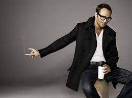
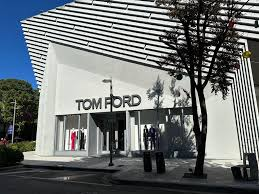

Fresh
Tom Ford was born in 1961 in the United States of America. He was born in Austin Texas. He grew up in Texas but when college came around he moved to the big apple, New York City. He studied at Pasons School of Design and graduated with an interior architiecture degree in 1986. He started his fashion designing in the late 1980s. He was originaly hired by Perry Ellis and Cathy Hardwick.
The Thick of it
In 1990 Gucci hired Tom as a creative director and he worked as the in house as a designer.
Through Toms efforts Gucci's profits were rising and Tom got nominated to be The Overseer of creative directors. Gucci was going bankrupt when Tom and first gotten hired but now buisness was booming and better than ever. In 1999 Tom also had been working with the Saint Laurent line in 2000 Tom was given the opertunity to become the designer of Saint Laurent's reday-to-wear line, Rive Guanche
Around this time Tom also found his into the film making buisness as well and directed quite a few impressive movies. 
Tom worked for the company and completey rebuilt Gucci. The House was sold again in 2004, and in 2005 Tom Retired from Gucci.
His Place
Not to be discoureged, Tom started his own brand. Tom Ford Brand. He still continues to work and design there today. Toms greatest acomplishments in the fahsion world have been bringing the H9use of Gucci which had fallen up to the Highest it has everbeen. Therefore Save Gucci.